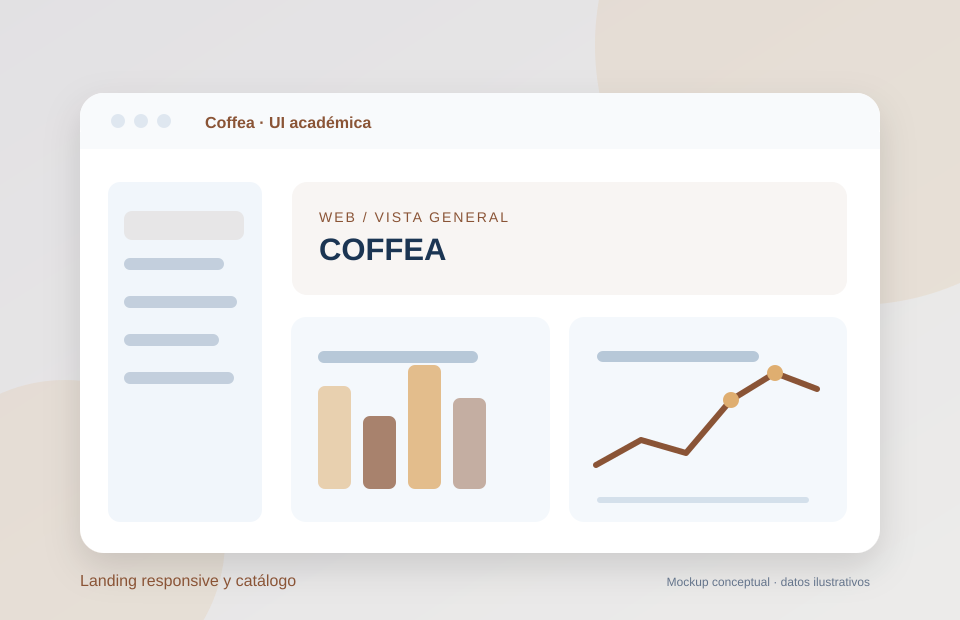

2026
2026WEB PROFESIONAL / SC
SC Soluciones Conectadas
Sitio profesional y demos por rubro que transforman necesidades operativas en experiencias navegables y soluciones de automatización.
HTMLCSSJavaScriptDemos B2B
PROYECTOS / PORTFOLIO
Seleccioné trabajos que muestran mi enfoque: investigar el problema, diseñar el proceso, integrar herramientas y desarrollar una experiencia útil.
Filtrá por tipo o explorá cada caso en detalle.
2026WEB PROFESIONAL / SC
Sitio profesional y demos por rubro que transforman necesidades operativas en experiencias navegables y soluciones de automatización.
 2026
2026SISTEMA REAL · CÓDIGO PRIVADO
Aplicación privada para organizar clientes, presupuestos, proyectos, tareas y documentación, con integraciones y seguimiento.
 2026
2026PROYECTO INTERNO · EN DESARROLLO
Proyecto en desarrollo para organizar prospectos, reuniones, seguimiento comercial y oportunidades con permisos por usuario.
 2022–26
2022–26TRAYECTORIA INDUSTRIAL
Experiencia en HMI, PLC Siemens, monitoreo operativo e integración industrial desarrollada durante mi etapa en Intellymation.
 2026
2026CASO UX/UI · ACADÉMICO
Cotización, comparación de coberturas y simulación de pago en un flujo responsive con estados de validación.

2026METODOLOGÍA
En cada proyecto buscamos entender el objetivo, ordenar los datos, diseñar una solución y evaluar su uso.
Procesos, usuarios, datos y restricciones.
Flujos, arquitectura e interfaces.
Desarrollo, integraciones y automatización.
Validaciones, pruebas y evolución del sistema.